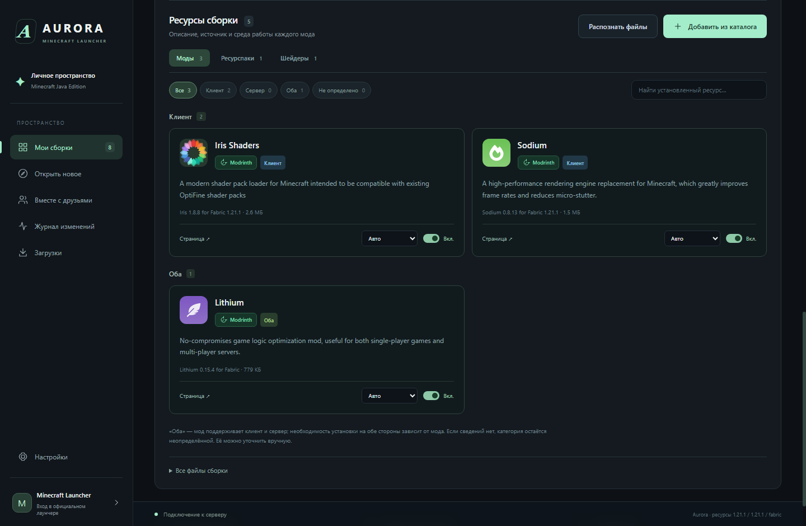

Видно, что установлено
Иконка, описание, версия и источник каждого ресурса. Моды разделены на клиентские, серверные и общие; неизвестную категорию можно уточнить вручную.

От первого блока до общего приключения.
Сборки, любимые моды и друзья — в одном
настольном лаунчере.
Уютный survival, техническая сборка или мир для компании. Выбирай версию Minecraft и загрузчик, добавляй ресурсы и сохраняй порядок в своей библиотеке.

Иконка, описание, версия и источник каждого ресурса. Моды разделены на клиентские, серверные и общие; неизвестную категорию можно уточнить вручную.
Выбор совместимых версий, загрузка обязательных зависимостей и подходящей Java. Шейдеры и ресурспаки попадают в свои папки.
Резервные копии с мирами, массовое обновление с откатом и диагностика ошибок. Подтверждения остаются внутри интерфейса.
Открой пространство на своём компьютере и передай друзьям адрес. Они смогут скачать общую сборку, а доверенные редакторы — публиковать изменения.
Как устроена совместная работа ↗Встроенный хост работает при открытой Aurora. Постоянный сервер Cloudflare Workers Free проверен на опубликованном экземпляре. Для своей компании размести его в своём аккаунте или получи приглашение владельца готового сервера. Для совместной игры нужен отдельный Minecraft-сервер или LAN-мир.
Aurora находится в разработке. Здесь указан фактический статус подключений, чтобы было ясно, что уже проверено и что ещё требует настройки.
Сборки, моды, ресурспаки и шейдеры. Поиск и настоящие загрузки проверены, включая Sodium, Iris и Complementary.
Проверены реальные загрузкиПоиск, версии, зависимости и импорт реализованы. Для использования нужен одобренный API-ключ приложения; у Aurora его пока нет. В версии 0.4.1 источник временно отключён.
Требуется доступ к APIПока Mojang рассматривает заявку, Aurora готовит профиль и открывает официальный Minecraft Launcher. Вход выполняется там.
Запуск через официальный лаунчерИсходники, инструкция по сборке и текущие ограничения доступны в репозитории. Проект продолжает развиваться — обратная связь помогает выбрать следующий шаг.
Нет. Лаунчер загружает подходящую Java. Готовый Windows EXE включает среду приложения. Node.js нужен только для сборки из исходников.
Для входа и игры нужен аккаунт Microsoft с Minecraft Java Edition. В Aurora нет обхода лицензии. Текущая версия передаёт запуск установленному официальному Minecraft Launcher.
Каталог подбирает версии по Minecraft и загрузчику, но совместимость произвольных модов проверяется в игре. Категории «Клиент», «Сервер» и «Оба» описывают среду работы, а не гарантируют совместимость.
Aurora продолжает работу в репозитории прежнего проекта CraftSync. Репозиторий переименован, а предыдущая реализация сохранена в истории Git.